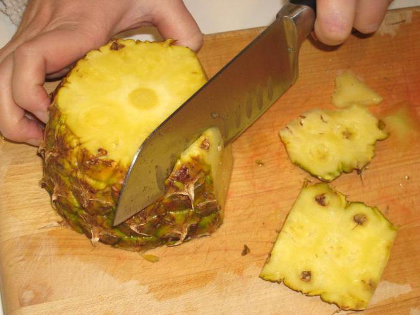
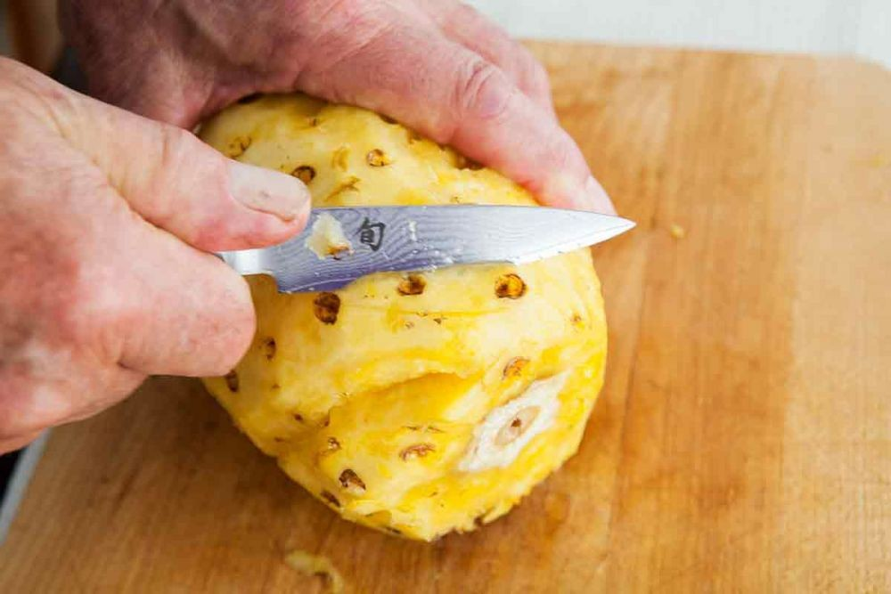
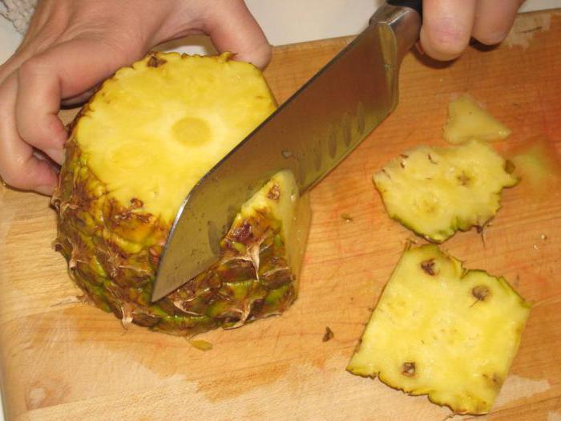
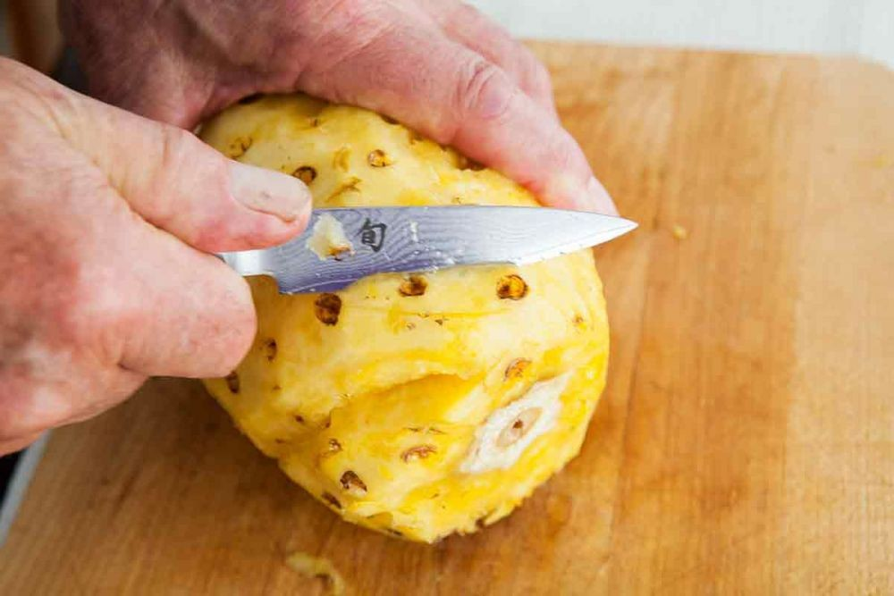

Страницы



Ананасы
Как правильно чистить ананас ножом в домашних условиях.
Тебе понадобятся: Кухня – 1 шт. Ананас – 1 шт. Разделочная доска – 1 шт. Нож – 1 шт. Вместительная тарелка – 1 шт. Итак, рассказываем пошагово, как правильно чистить и как красиво нарезать ананас при помощи ножа. Положи горизонтально вымытый сухой ананас на разделочную доску. Сразу же срежь верхушку и нижнюю часть фрукта («попку»). Затем поставь ананас вертикально и срежь с него кожуру, двигаясь по горизонтали сверху вниз. Если на ананасе остались глазки, то аккуратно срежь их тонким слайсом или используй обычную картофелечистку. Теперь ты знаешь, как правильно чистить ананас, а вот инструкция, чтобы грамотно нарезать его дольками: Разрежь ананас вдоль и пополам в вертикальном положении. Каждую половинку раздели ещё на две длинные части. Жёсткую сердцевину вырежи ножом. Готово!
Страницы
  |